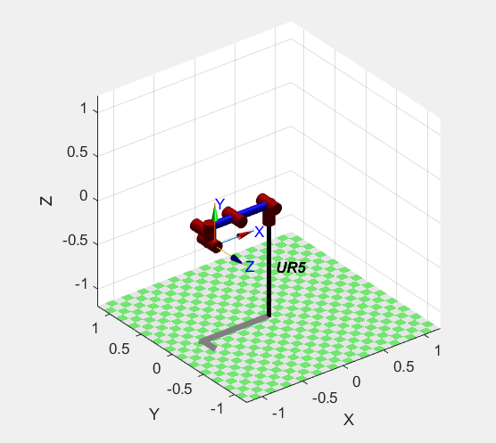
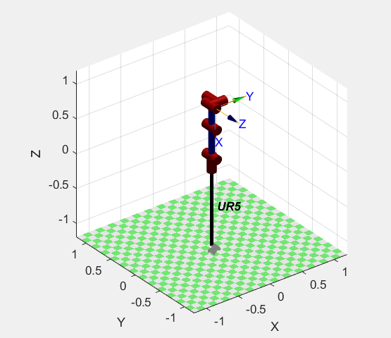
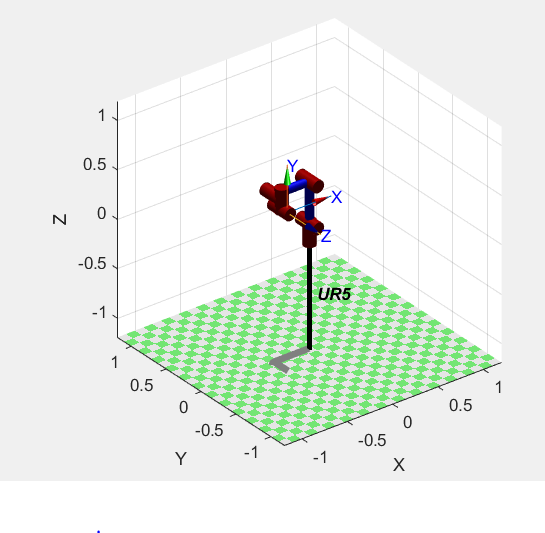
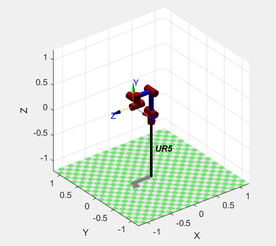
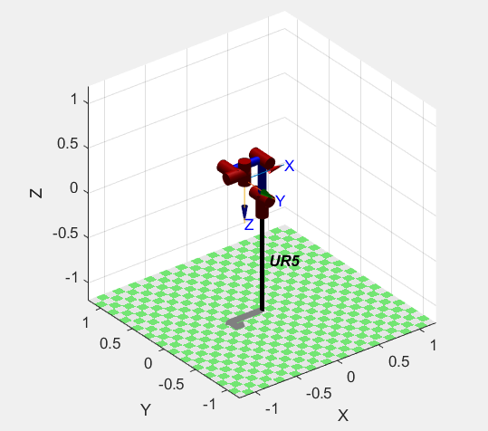

Coordenadas q1 = [0 0 0 0 0 0]

Coordenadas q2 = [0 -pi/2 0 0 0 0]

Coordenadas q3 = [0 -pi/2 pi/2 0 0 0]

Coordenadas q4 = [0 -pi/2 pi/2 0 pi/2 0]
UR5.PNG)
Coordenadas q5 = [0 -pi/2 pi/2 0 pi/2 -pi/2]

Coordenadas q6 = [0 -pi/2 pi/2 pi/2 pi/2 -pi/2]